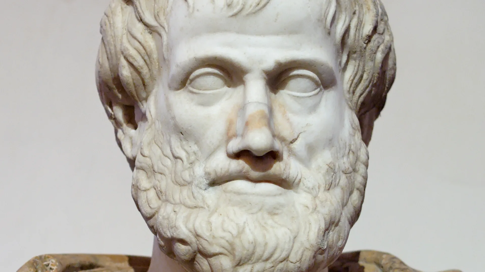

Uma descoberta recente
mostra que algumas células
permanecem capazes de se
reorganizar mesmo após
a morte do organismo.
Após a morte de um
organismo, determinadas
células continuam viáveis
durante algum tempo.
Em laboratório, algumas
delas formaram pequenas
estruturas conhecidas como
xenobots e anthrobots.
Essas estruturas são capazes
de se mover, cooperar e
responder ao ambiente.
Os pesquisadores não
afirmam que um organismo
voltou à vida.
O que mudou foi nossa
compreensão sobre o
comportamento das células
após a morte.
Para Aristóteles, um ser vivo
não era definido apenas
pela matéria.
As mesmas células podem
assumir novas funções quando
passam a integrar uma
organização diferente.
A descoberta científica não
confirma Aristóteles.
Ela mostra que sua pergunta
continua atual.

Durante séculos pensamos
que vida e morte eram
categorias perfeitamente
definidas.
Hoje percebemos que
a natureza é mais complexa
do que nossas definições.
Quando a ciência amplia
aquilo que sabemos, a
filosofia amplia aquilo que
precisamos compreender.
Talvez seja sobre
a própria vida.
Quanto mais investigamos
a natureza, menos ela se encaixa
nas categorias rígidas criadas
pelo pensamento humano.